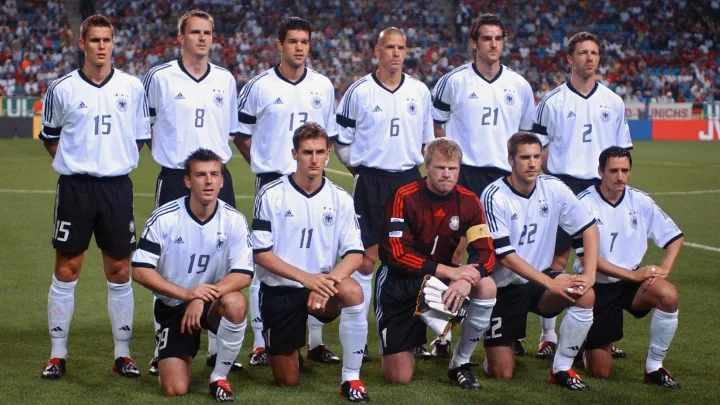

Maximos ganadores de la copa del mundo
Brasil

la seleccion de brasil gano el mundial en 5 ocaciones, su primer mundial fue en 1958, el segundo en 1962, el tercero lo gano en el año 1970, el cuarto en 1994 y su ultimo mundial lo gano en el 2002 de la mano de ronaldo nazario
Alemania

la seleccion de alemania gano el mundial en 4 ocaciones, su primer mundial fue en 1954, el segundo en 1974, el tercero lo gano en el año 1970,y el cuarto mundial en 2014
italia

la seleccion de italia gano el mundial en 4 ocaciones, su primer mundial fue en 1934, el segundo en 1938, el tercero lo gano en el año 1982,y el cuarto mundial en 2006